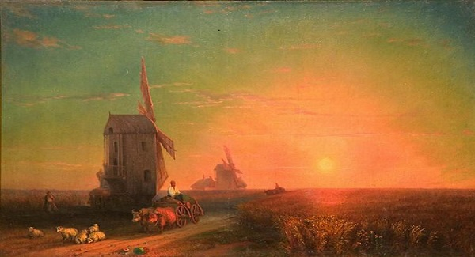
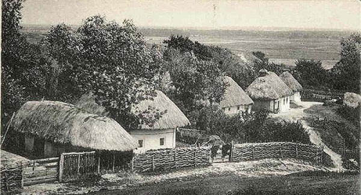
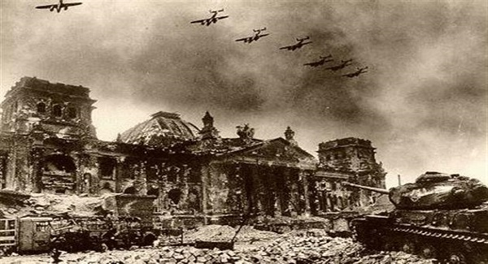
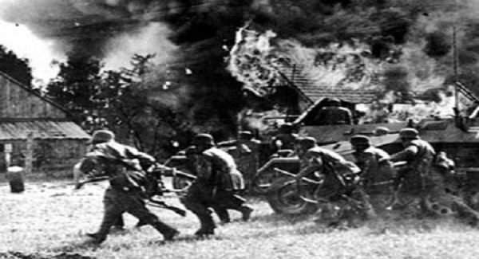

Під владою Російської імперії (Кінець XIX початок XX століття)
Із занепаду Польської держави почалося загарблення її території сильними сусідами - Росією, Прусією та Австрійською імперіє.
За III поділом Речі Посполитої в 1795 році село Козлин потрапило у склад Російської імперії (Волинська губернія, Рівненський повіт, Кустинська волость).
Під час російського панування в селі був побудований млин, тартак, шлюз і одна з найбільших у Волинській губернії паперова фабрика.

За "Відомостями про фабрику і завод Волинської губернії"
у 1845 році діяла паперова фабрика в селі Козлин Рівненського повіту. Вона давала продукції на 6360 карбованців щороку. Папір збувався у різні міста губернії. Папірня належала князеві Радзівілу. Діяла вона ще в 1852 році.
Із 1861 року жителі Козлина в числі інших підданих імперії бели звільнені з панської неволі. Значною подією в житті села було відкриття у 1876 році дзвіниці при Свято-Воскресенській церкві. За переписом 1880 року у селі налічувалося 80 дворів і 658 жителів.

Цікаві дані про село Козлин відображенні у книзі О.Цинкаловського "Стара Волинь і Волинське Полісся".
На початку ХХ століття село Козлин входило до складу Кустинської волості Рівненського повіту Волинської губернії за 22 кілометри від міста Рівне над річкою Горинь. В 1900 році був там 131 будинок і 843 жителі. Церква дерев'яна, побудована в 1793 році на місці старої XVI ст. В селі Козлин проживало 820 жителів, було 2 тартаки з річним оборотом 32 тис. крб., 1 мануфактурна крамниця, 1 крамниця горілчана (монопул), 8 крамниць, склад пива (все тримали сільські євреї), водяний млин 100 000 пудів перемолу.
У серпні 1914 року почалася Перша Світова війна, хвиля якої швидко докотилась да наших країв. Дуже погіршилося становище жителів села у зв'язку з наближенням фронту. Для потреб армії власті ревізували більше половини коней та волів, фураж. Почалася мобілізація жителів села. В селі почали лютувати такі епідемії як тиф, холера, чума, сибірська язва... 4 вересня 1917 року в Києві виникла Центральна рада, влада якої роширилася і на Рівненський повіт. Однак встановлення влади ЦР і закінчення війни не принесло довгоочікуваного миру на українській землі.

Наше село протягом 1918-1920 рр. було загарбане військами різних іноземних держав.
Лютий 1918 року - село Козлин було окуповано військами Німечини та Австро-Угорщини.
Травень 1919 року - захоплення села більшовиками.
Серпень 1919 року - встановлення польської влади.
Липень 1920 року - на короткий час село знову захоплюється більшовицькою Червоною Армією.
Вересень 1920 року - на території нашого краю встановлюється польська влада.
За Ризьким договором 1921 року село Козлин в числі інших населених пунктів Волині потрапило до складу Польської держави. Для жителів села почалися дні польської окупації. Найкращі землі навколо села потрапили до рук польських осадників. Селяни, які терпіли від малоземелля або безземелля, змушенні були найматися за мізерну плату (80 грош-1 злотий) до польськихосадників Подгорського, Цибульського, Вагилевича та інших.

В селі діяла початкова школа, викладання в якій були в основному на польській мові.
В школі в 30-х роках працювала одна вчителька Калинович Олена Онуфріївна.
Важке соціальне-укономічне становище примусило багатьох козлинців до еміграції за кордон. Всього в 1929-1938 роках з села в країни Північної і Південої Америки виїхало 20 чоловік. Це сім'ї Давидюка П., Гавлітіна І., Яковець та інших.
Top